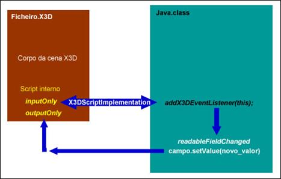

Neste tipo de acesso existe um nó de script dentro do ficheiro X3D que vai fazer a ligação com a classe Java, ou seja, é a própria cena X3D que, ao ser carregada num browser X3D, vai chamar a classe Java onde existe o código que vai efectuar as alterações pretendidas na cena.
Mudar as coordenadas de um objecto
_______________________________________
Em primeiro lugar é necessário definir, no ficheiro X3D, o interface do script que vai chamar a classe Java assim como as routes necessárias.

O interface do script é constituído por campos de entrada e saída. Quando for gerado, na cena X3D, o campo de entrada, a classe Java é executada e o seu valor de saída é enviado através do campo de saída. As routes servem para fazer a ligação entre os objectos da cena X3D e os respectivos campos de entrada e saída definidos no interface do script.
O segundo passo, agora já na classe Java, é a importação do package org.web3d.x3d.sai, necessário para executar o SAI.
import org.web3d.x3d.sai.*; |
Também é necessário implementar o interface X3DScriptImplementation, que vai permitir o acesso ao ficheiro X3D.
public class Jcubo implements X3DScriptImplementation { |
O passo seguinte é aceder aos campos definidos no interface do Script através da classe Java, utilizando o método setFileds.
public void setFields(X3DScriptNode externalView, Map fields) { |
Para controlar se foi gerado o evento InputOnly definido no interface do script, a classe precisa de implementar o interface X3DFieldEventListener. Desta maneira vai ser adicionado um listener campo pretendido.
isOver.addX3DEventListener(this); |
Quando ocorre uma mudança do estado do campo que tem associado um listener, vai ser desencadeada a função readableFieldChanged, executando-se as suas instruções. Neste caso, essas instruções passam pela modificação dos valores dos campos pretendidos e do envio desses valores de regresso à cena X3D através do método setValue.
public void readableFieldChanged(X3DFieldEvent evt) { |
Pode ver-se na seguinte figura uma representação da filosofia de programação do acesso interno.

Para melhor se entender este tipo de acesso e em jeito de tutorial vai ser apresentado um exemplo de acesso interno a uma cena X3D. Pretende-se, com este exemplo contribuir para que potenciais interessados neste tipo de programação possam aprender, colmatando a falta de informação bibliográfica existente.
Exemplo 1 - Mudar a cor de um objecto
Neste exemplo vai explicar-se como mudar a cor a um objecto. Associado ao objecto existe um sensor de toque. A cor será mudada quando o utilizador passar com o rato em cima do objecto, ou seja, quando for detectado o evento isOver deste sensor de toque.
A primeira coisa a fazer é a criação do objecto e a associação do mesmo com um sensor de toque.
<Group DEF='GROUND'> |
Seguidamente, vai definir-se o script que vai aceder à classe Java.
<Script DEF="SC" url=""Jcubo.class" "> |
Em primeiro lugar é definido o nome do script e a classe Java à qual se vai aceder. Depois vão definir-se quais são os campos de entrada e saída, como neste caso enviamos o evento isOver do sensor de toque e esperamos que a classe Java modifique a cor do objecto (diffusecolor) são estes mesmos os campo de entrada e saída.
<ROUTE fromField="isOver" fromNode="TS"toField="isOver" toNode="SC"/> |
De seguida vão criar-se as ligações necessárias para conectar o ficheiro x3d com a classe Java, permitindo o envio e recepção de eventos.
Em primeiro lugar vai ligar-se o campo isOver do sensor de toque TS ao campo isOver do script que é a variável que vai ser lida na classe Java. Esta variável deve ter um nome igual dentro da classe Java. É também definida a ligação que permite o envio dos valores modificados da classe Java para a cena x3d. Da classe Java é enviada variável diffuseColor_changed que vai ser aplicada ao campo diffusecolor do respectivo nó.
public void setFields(X3DScriptNode externalView, Map fields) { |
São também definidas as variáveis que já tinham sido referidas anteriormente quando se fez referencia ao script, e que vão servir como meio de enviar os valores entre o script e a classe Java. Nesta parte recebe-se o evento isOver que vai ser controlado com o método addX3DEventListener.
public void readableFieldChanged(X3DFieldEvent evt) { |
Quando existe uma alteração do valor isOver de false para true (cursor do rato em cima do sensor de toque) ou de true para false (cursor do rato fora do sensor de toque) vão ser accionados os eventos presentes na função readableFieldChanged. Nesta função serão alterados os valores da variável diffuseColor com o método setValue.
Os valores das variáveis “VERMELHO” e “VERDE” tinham sido definidos anteriormente.
private static final float[] VERMELHO = new float[] {1.0f, 0, 0}; |
Deste modo, cada vez que o utilizador passar com o rato em cima do objecto, a cor do objecto vai passar a vermelho. Quando o utilizado tirar o cursor do rato de cima do objecto a sua cor vai passara a verde.
Exemplo 2 - Mudar as coordenadas de um objecto
Neste caso no ficheiro x3d existem dois objectos. Uma esfera com um sensor de toque, e um cone. Pretende-se que ao clicar na esfera se mudem as coordenadas do cone.
Pode ver-se a seguir o script que será responsável por fazer a ligação com a classe Java. Essa classe é a Coord2.class. O evento enviado será o isActive do sensor de toque TS_02. O evento recebido será o translation que será aplicado ao nó dad_Cone.
<Script DEF="SC2" url=""Coord2.class" "> |
Na classe Java, em primeiro lugar acede-se aos campos definidos no interface do script interno e de seguida pode fazer-se o controlo do estado actual do evento isActive que veio do ficheiro x3d.
public void initialize() { // escutar eventos no campo isOver |
Na função readableFieldChanged são feitas as alterações do campo tranlation de acordo com a mudança dos valores do campo isActive do sensor de toque de false para true.
public void readableFieldChanged(X3DFieldEvent evt) { |
A variável “CENTRO” já tinha sido declarada anteriormente.
private static final float[] CENTRO = new float[] {-0.132f, 2.766f, 0}; |
Desta maneira cada vez que o utilizador clicar na esfera, o cone vai ser transladado da sua posição inicial para a nova posição.